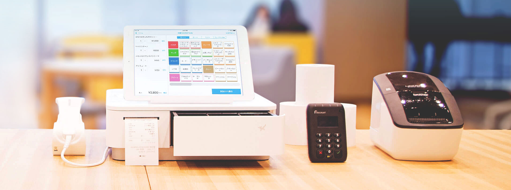
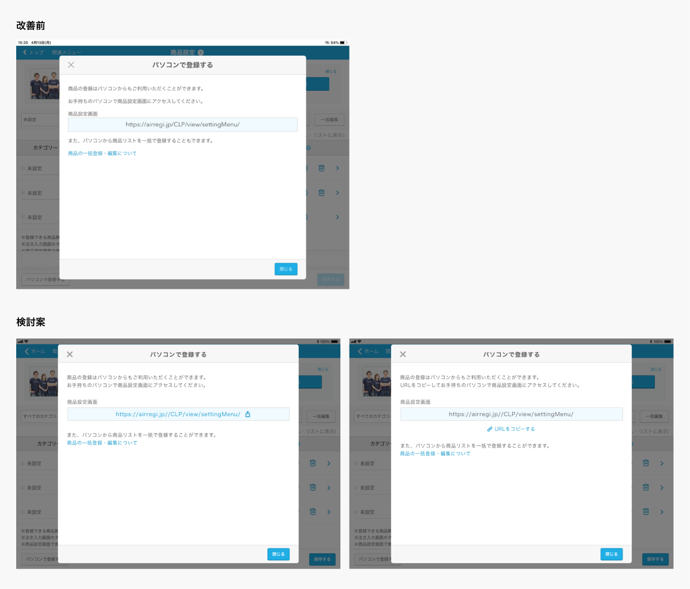
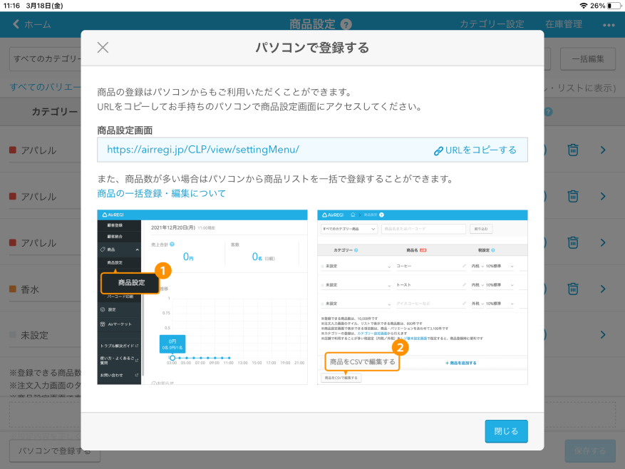

SaaSサービスにおけるユーザー課題に基づいたUI設計、WEBビュー実装における技術制約をふまえた改善提案を行いました。あわせてデザインシステムやコンポーネントズレの解消、ツールの運用改善、オンボーディング整備など組織全体の業務効率化を推進しました。
課題の要件定義から技術制約の考慮、エンジニアへのスムーズな受け渡しまで一元的に対応しました。
既存の課題やユーザーの意見を分析。対象案件の改善方針を確定。
WEBビュー実装等の技術制限（ネイティブ機能不可など）の中で実行可能なUI案を検討。
エンジニアと実現可能性の協議を行い、無理のない仕様へと落とし込み。
要件や仕様をConfluenceに集約し、デザイン資産・素材をエンジニアへ正確にハンドオフ。
【課題】モーダル内に表示される「商品設定画面」項目に記載されたURLがコピーできず、PC上で登録作業を行う際に手入力（直打ち）を強いられていた。また、WEBビュー実装であるためiOSネイティブの標準機能に頼らないUX設計が求められた。
【対応】技術制約を満たしつつ、コピー操作を直感的に行えるUIへリデザインし、ユーザーの入力負荷を軽減しました。


画面制作にとどまらず、プロダクト全体のトンマナ整流化やチーム運営・オンボーディングの改善に取り組みました。
技術的制約（WEBビューなど）がある中で、最適な代替案を出す思考力と、デザインシステムや運用ドキュメントを整えて未来の負債を減らす重要性を理解しました。
目前のUI作成だけでなく、長期的な開発スピード・保守性を高める仕組みづくりにも責任を持って取り組んでいきます。